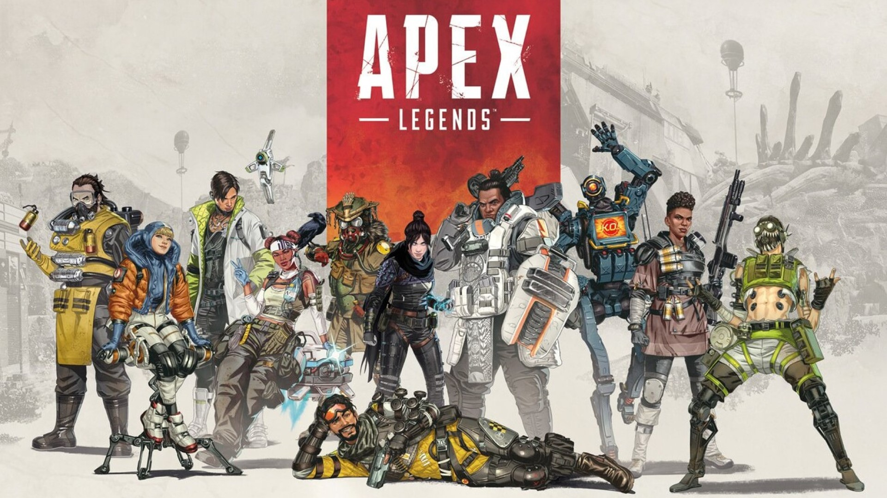

Apex Legends is an action game currently available in Stream and EA.

Which you can take peek from the following inks,
Apex Steam version
Apex EA version

Each update comes with a new legend.
These updates are delivered as per season currently this game has about Thirteen (13) season.
At the beginning of the game defeault legends were added, by the time now most of them have been nerfed but they are still OP.
My faviourite one of them is known as path finder.
Path finder is unique legend which we will be discussed in the following topics.
Path finder is not a human nor even organic, he/it is a robot not even a synthetic or cuborg just a plain old simple robotwho has the capability of grappling from place to place. By this ability we can make cool shots as well as excap from combat whener necessary. But this has varible cool down time depending on the distance we used the grapple to travel it coulb between 3s to 10s. Ultimate ability allows this legend to create .......